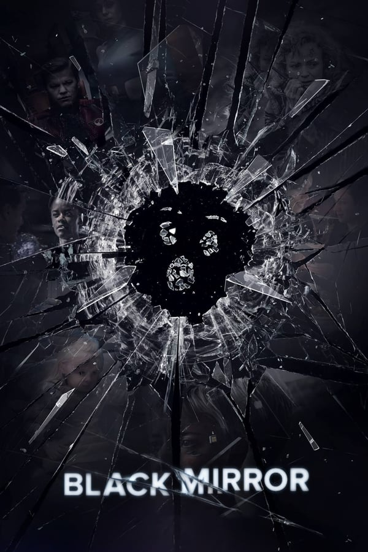
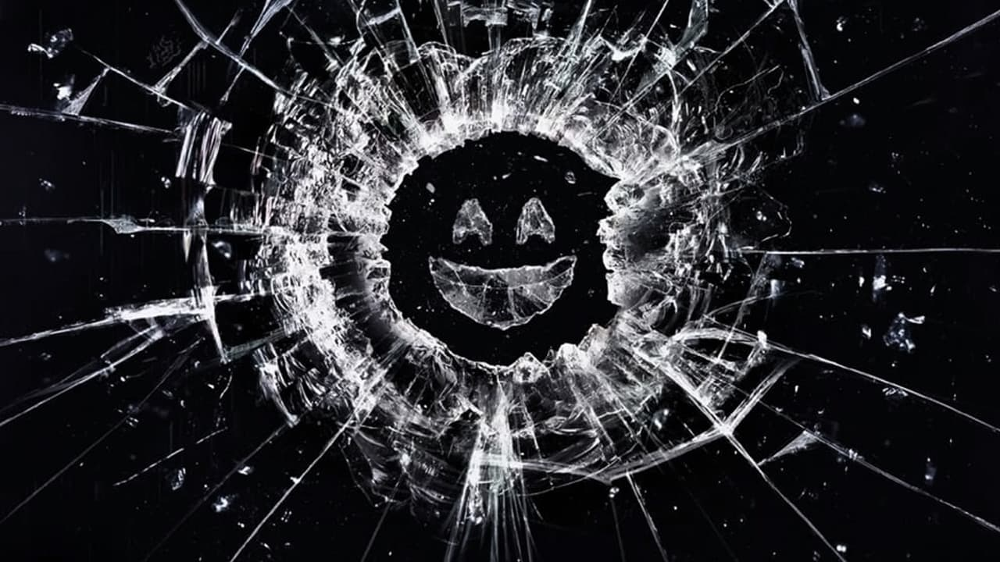
Esta série antológica de ficção científica explora um futuro próximo onde a natureza humana e a tecnologia de ponta entram em um perigoso conflito.
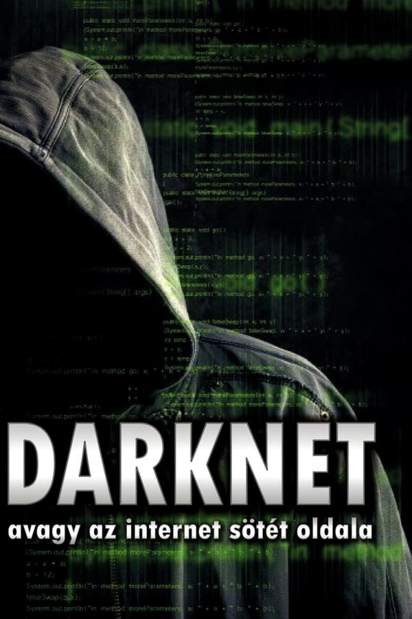
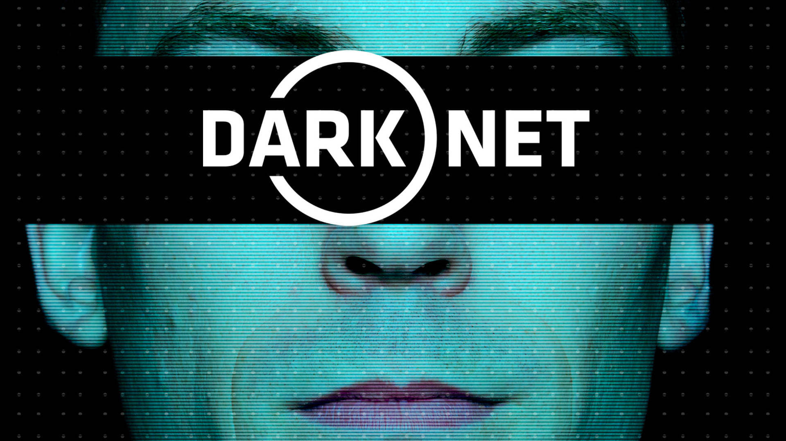
é uma série de TV documental que vai explorar as partes mais profundas da internet e algumas das pessoas que a fraquentam, a série de TV documental vai nos oferecer um novo olhar bem revelador e preventivo dentro de um enorme submundo totalmente cibernético e é dificilmente testemunhado por quase todos nós.
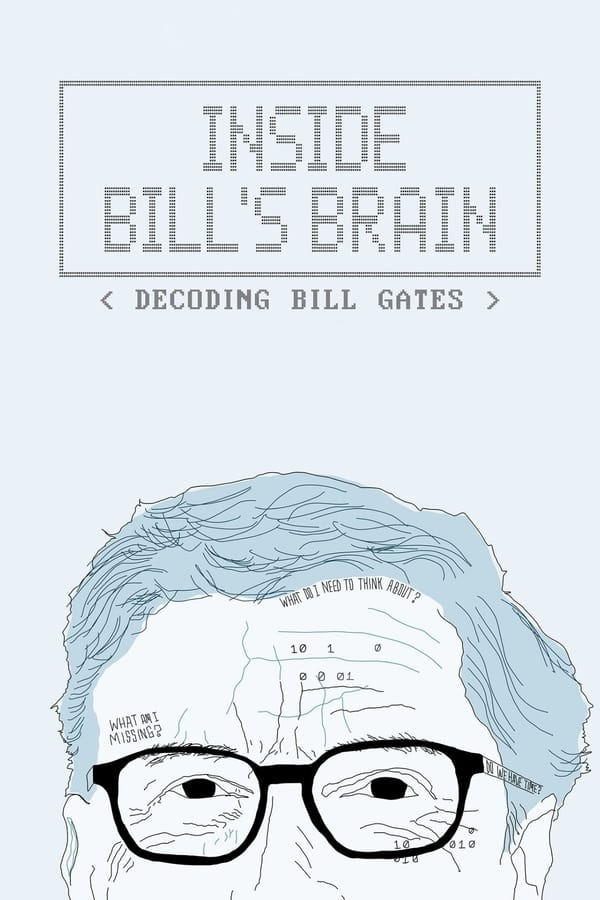
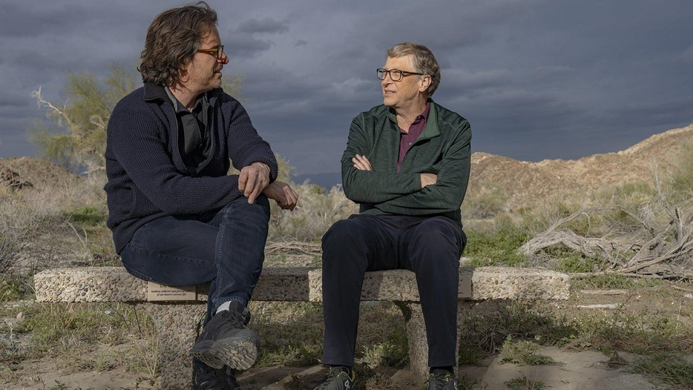
Em uma jornada pela mente de Bill Gates, descubra quem o influenciou e quais são as metas que o bilionário ainda pretende alcançar.

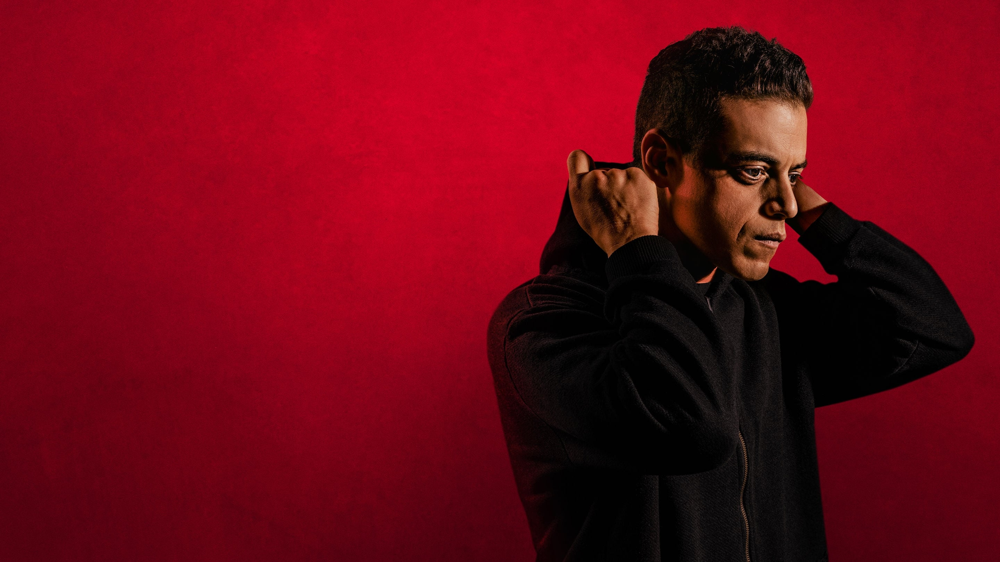
Elliot é um jovem programador que sofre de uma desordem que o torna anti-social. Acreditando que a única forma de se conectar com as pessoas é hackeando suas vidas. Suas atividades chamam a atenção de Mr. Robot, um misterioso anarquista que convida Elliot a fazer parte de uma organização que atua na ilegalidade com o objetivo de derrubar as corporações americanas.
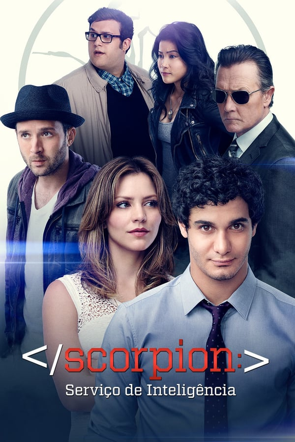
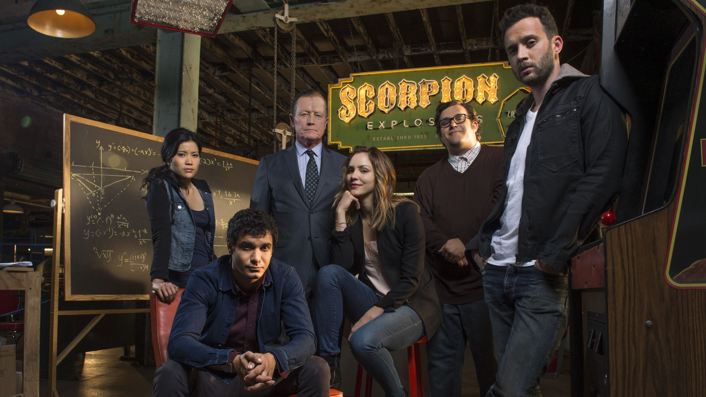
O Departamento de Segurança Interna recruta um gênio e sua equipe de prodígios para proteger a nação contra uma nova e sofisticada geração de terroristas.
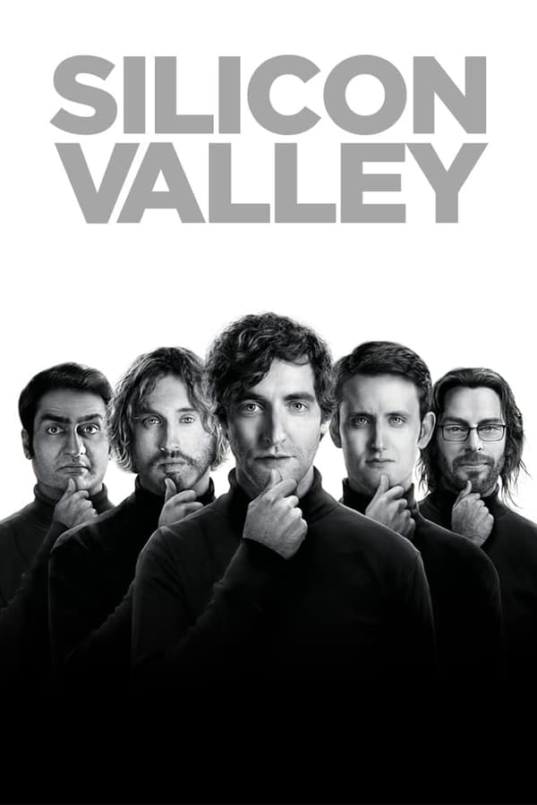
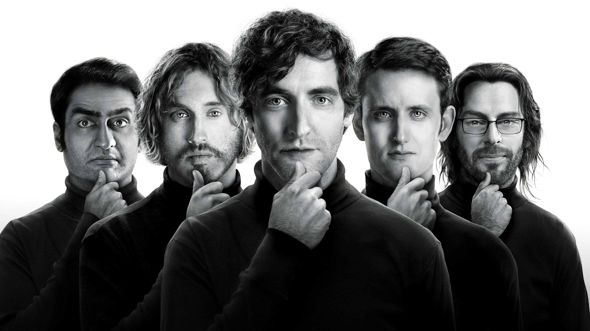
Ambientada no Vale do Silício, região da Califórnia fértil em inovações tecnológicas e científicas, a série mostra um grupo de desenvolvedores que cria novo um programa com o objetivo de impressionar um bilionário excêntrico do ramo tecnológico.
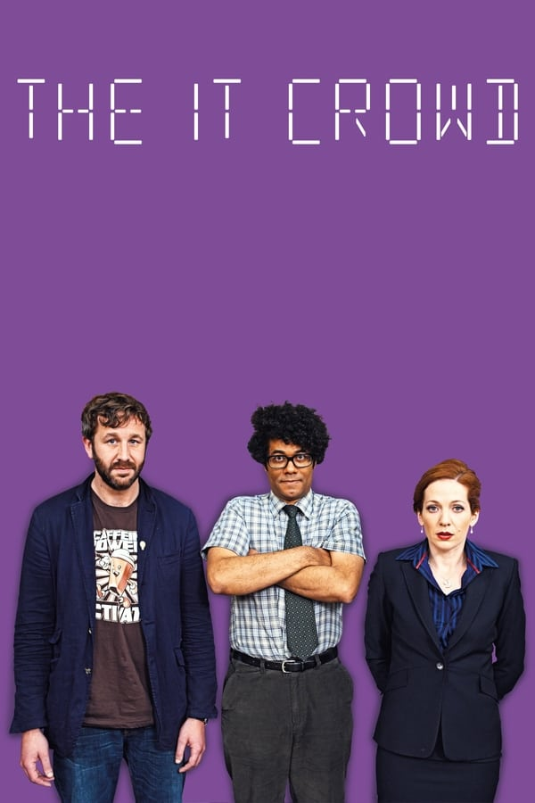
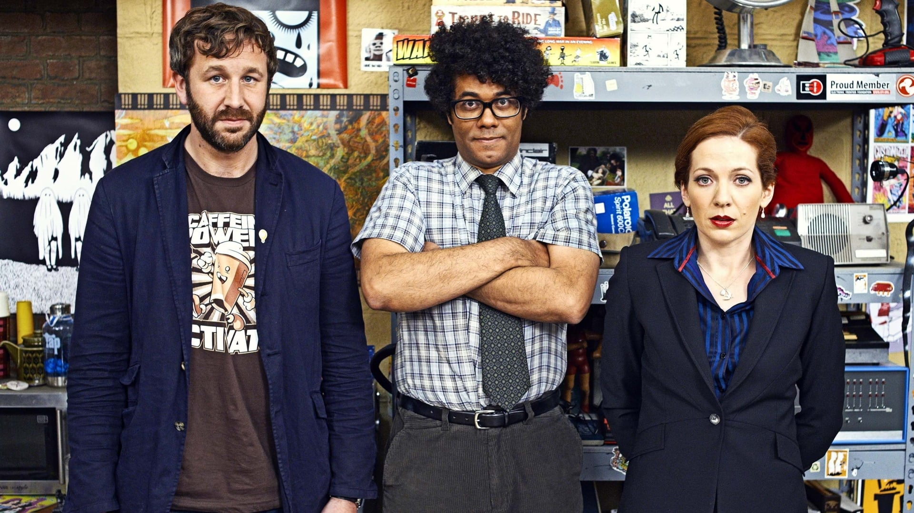
Ajudados por uma gestora que não entende nada de tecnologia, dois nerds de TI exploram o melhor que a vida tem numa empresa com um novo proprietário.